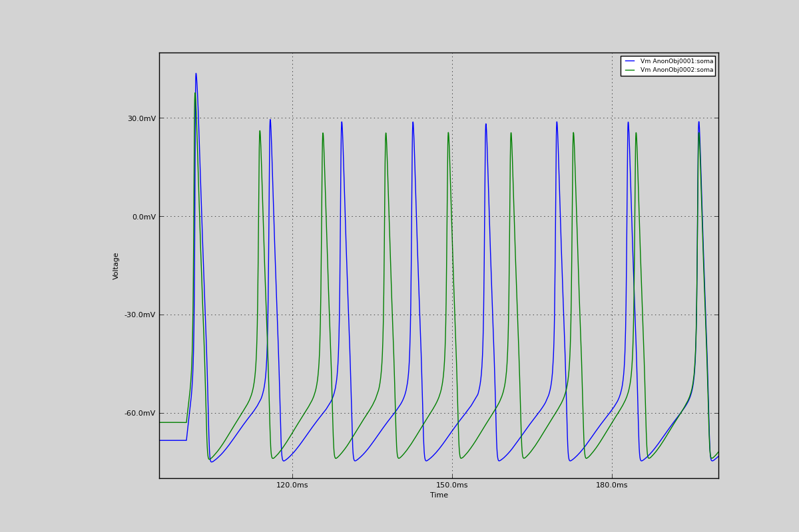

11. Demonstrate using NEURON mod files directly in a simulation
Demonstrate using NEURON mod files directly in a simulation We run two simulations, using 2 slightly different mod files, and plot the membrane voltage seen.
Code
from morphforge.stdimports import *
from morphforgecontrib.simulation.channels.exisitingmodfile.core import SimulatorSpecificChannel
def build_simulation(modfilename):
# Create the morphology for the cell:
morphDict1 = {'root': {'length': 20, 'diam': 20, 'id':'soma'} }
m1 = MorphologyTree.fromDictionary(morphDict1)
# Create the environment:
env = NEURONEnvironment()
# Create the simulation:
sim = env.Simulation()
cell = sim.create_cell(morphology=m1)
modChls = env.Channel(SimulatorSpecificChannel, modfilename=modfilename)
# Apply the mechanisms to the cells
cell.apply_channel( modChls)
sim.record(cell, what=StandardTags.Voltage, name="SomaVoltage", cell_location = cell.soma, description='Membrane Voltage')
sim.create_currentclamp(name="Stim1", amp=qty("200:pA"), dur=qty("100:ms"), delay=qty("100:ms"), cell_location=cell.soma)
results = sim.run()
return results
mod3aFilename = Join(LocMgr.get_test_mods_path(), "exampleChannels3a.mod")
results3a = build_simulation(mod3aFilename)
mod3bFilename = Join(LocMgr.get_test_mods_path(), "exampleChannels3b.mod")
results3b = build_simulation(mod3bFilename)
TagViewer([results3a, results3b], timerange=(95, 200)*units.ms)
try:
import os
print 'Differences between the two mod files:'
os.system("diff %s %s"%(mod3aFilename, mod3bFilename))
except:
print "<Can't run 'diff', so can't show differences!>"
Figures

Download Figure
{kind=link}
Output
No handlers could be found for logger "neurounits"
2013-10-19 15:40:25,433 - morphforge.core.logmgr - INFO - Logger Started OK
2013-10-19 15:40:25,433 - DISABLEDLOGGING - INFO - _run_spawn() [Pickling Sim]
No handlers could be found for logger "neurounits"
2013-10-19 15:40:26,946 - morphforge.core.logmgr - INFO - Logger Started OK
2013-10-19 15:40:26,946 - DISABLEDLOGGING - INFO - Ensuring Modfile is built
NEURON -- Release 7.1 (359:7f113b76a94b) 2009-10-26
Duke, Yale, and the BlueBrain Project -- Copyright 1984-2008
See http://www.neuron.yale.edu/credits.html
Openning ScriptFlags
/auto/homes/mh735/hw/NeuroUnits/ext_deps
Loading StdLib file: /auto/homes/mh735/hw/NeuroUnits/src/neurounits/../stdlib/stdlib.eqn
Loading Bundle from: /local/scratch/mh735/tmp/morphforge/tmp/simulationresults/23/233504ddb6db04ab96d596034ac6fd64.bundle (11k) : 0.779 seconds
loading membrane mechanisms from /local/scratch/mh735/tmp/morphforge/tmp/modout/mod_b9e50529a8d1f686ed3955884ae081fa.so
1
1
0.01
0
1
50000
1
Running Simulation
Time for Extracting Data: (1 records) 0.000553846359253
Running simulation : 0.073 seconds
Post-processing : 0.003 seconds
Entire load-run-save time : 0.855 seconds
Suceeded
No handlers could be found for logger "neurounits"
2013-10-19 15:40:28,581 - morphforge.core.logmgr - INFO - Logger Started OK
2013-10-19 15:40:28,581 - DISABLEDLOGGING - INFO - Ensuring Modfile is built
NEURON -- Release 7.1 (359:7f113b76a94b) 2009-10-26
Duke, Yale, and the BlueBrain Project -- Copyright 1984-2008
See http://www.neuron.yale.edu/credits.html
Openning ScriptFlags
/auto/homes/mh735/hw/NeuroUnits/ext_deps
Loading StdLib file: /auto/homes/mh735/hw/NeuroUnits/src/neurounits/../stdlib/stdlib.eqn
Loading Bundle from: /local/scratch/mh735/tmp/morphforge/tmp/simulationresults/aa/aad7f039ef362cda20e37012363d1de9.bundle (11k) : 0.765 seconds
loading membrane mechanisms from /local/scratch/mh735/tmp/morphforge/tmp/modout/mod_5e54856fc3939091ebcff35b32cc9ab3.so
1
1
0.01
0
1
50000
1
Running Simulation
Time for Extracting Data: (1 records) 0.000562906265259
Running simulation : 0.073 seconds
Post-processing : 0.003 seconds
Entire load-run-save time : 0.841 seconds
Suceeded
15c15
< SUFFIX exampleChannels3a
---
> SUFFIX exampleChannels3b
28c28
< el = -64.3 (mV)
---
> el = -44.3 (mV)
Openning ScriptFlags
/auto/homes/mh735/hw/NeuroUnits/ext_deps
Loading StdLib file: /auto/homes/mh735/hw/NeuroUnits/src/neurounits/../stdlib/stdlib.eqn
PlotMnager:Saving _output/figures/singlecell_simulation050/{png,svg}/fig000_Autosave_figure_1.{png,svg}
Differences between the two mod files: